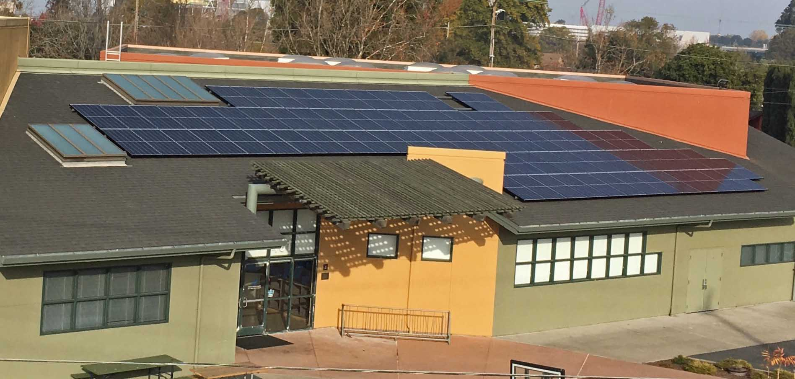
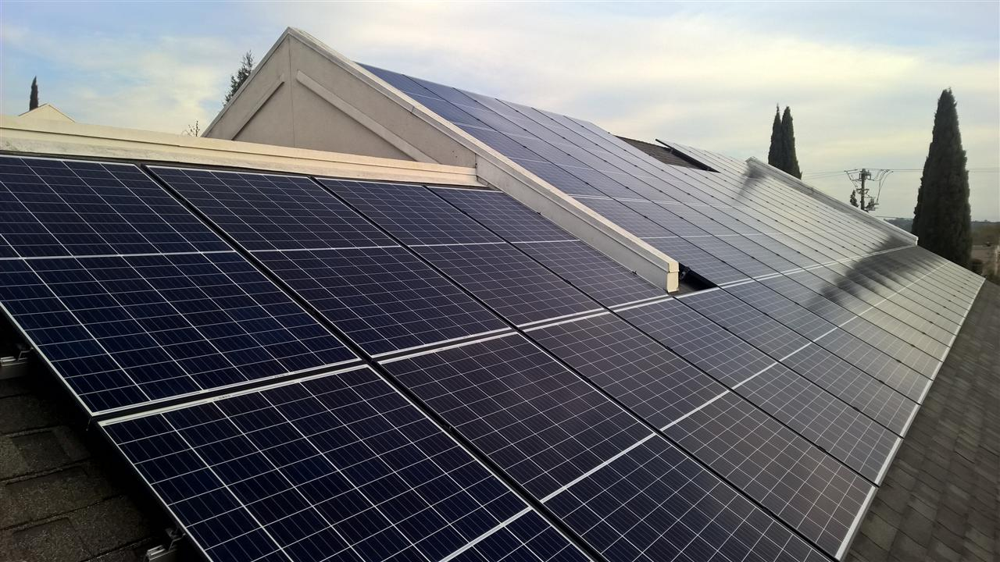
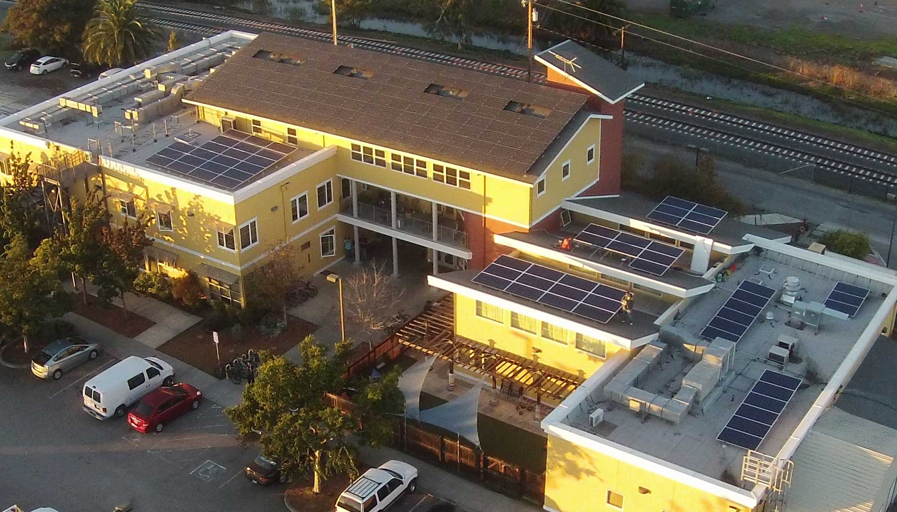
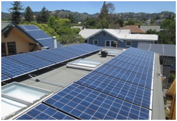

Systems for Nonprofit Organizations
SunWork installs solar systems for small nonprofit organizations. These systems help nonprofits reduce their electric bills enabling them to deliver more services to the community. The systems also increase the clean renewable energy produced locally. Here are examples of our projects.
Current Projects
San Francisco Estuary Institute - Richmond - 17.4 kW
Completed Projects
Faith Baptist Church, Oakland - 6.1 kW
Installed with funding partner RE-volv.org
Boys and Girls Club in Belle Haven, Menlo Park - 24.4 kW
Installed with funding from Facebook and support from Menlo Spark

Holy Cross Episcopal Church in Castro Valley - 29.1 kW

Thrift Box in San Jose - 26.7 kW
Piedmont Community Church in Piedmont - 21.5 kW
Harbor House Ministries in Oakland - 14.4 kW
Installed with funding partner RE-volv.org, panels donated by Jinko Solar
Committee on the Shelterless phase 2 in Petaluma - 19.2 kW
Funding through nonprofit partner Everybody Solar

All Saints Episcopal Church in San Leandro - 9.24 kW - Case Study

Chinmaya Mission in San Jose - 43.7 kW
Community on the Shelterless (COTS) in Petaluma - 19.2 kW
Funding through nonprofit partner Everybody Solar
Ecumenical Hunger Project in East Palo Alto - 29.4 kW
Niles Discover Church in Fremont - 23.5 kW
Sunnyvale Heritage Park Museum - 20.5 kW
Eastside College Preparatory School in East Palo Alto - 4.2 kW
Palo Alto Church - Saint Albert the Great - 35 kW
WildLife Associates - 27 kW system in Half Moon Bay
Funding through nonprofit partner Everybody Solar, solar panel donation from Jinko Solar
Inverter donation Enphase, mounting hardware from Mounting Systems
Bruce Holaday, Wildlife Associates Executive Director - check out the video
Other Avenues Food Coop - 32 kW system in San Francisco
Funded through Power Purchase Agreement with nonprofit partner RE-volv
Our Lady of the Rosary Church - 27 kW system in Palo Alto
Kehilla Community Synagogue - 22 kW system in Piedmont, CA
Funded through Power Purchase Agreement with nonprofit partner RE-volv
Check out the time lapse video of the installation
Parents Nursery School - 4 kW system in Palo Alto
Rebuilding Together Peninsula – 21 kW system in Redwood City
Funding through nonprofit partner Everybody
Solar and solar panel donations from Jinko Solar
Shawl-Anderson Dance Center – 10 kW system in Berkeley
Funded through Power Purchase Agreement with nonprofit partner RE-volv


The Catholic Worker House – 5 kW system in Redwood City